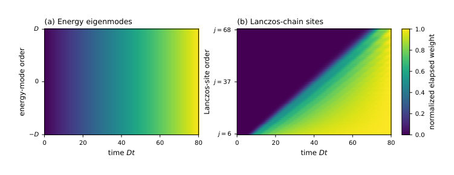
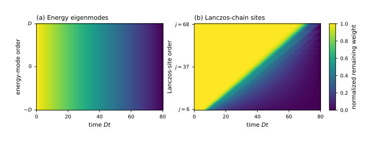

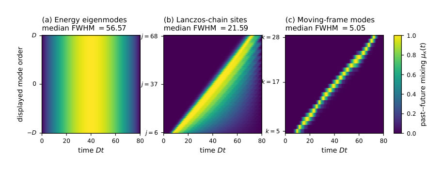
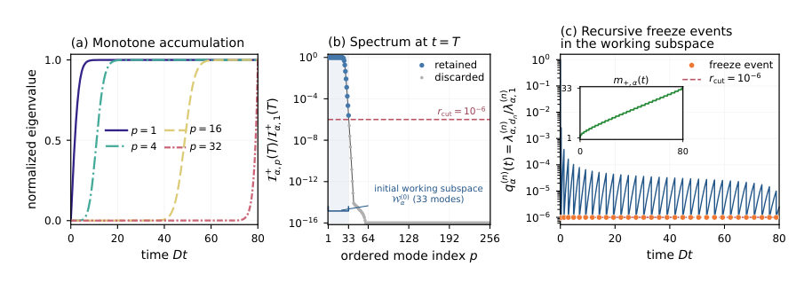
Highlighted author(s): Markus Greiner
Authors: Alexander Dennisovich Deters, Yanfei Li, Alexander Douglas, Markus Greiner, Aaron W. Young
Type: experiment · Category: other · PDF: https://arxiv.org/pdf/2608.18071v1
Analysis basis: full PDF text, analyzed in chunks
Topic relevance: 🔥 analog quantum simulation 5/5 · interference shaping light 3/5 · QC/QI experiment 2/5 · methods for driven-dissipative 2/5 · quantum optics experiment 2/5 · Rydberg arrays 1/5 · quantum measurements 1/5
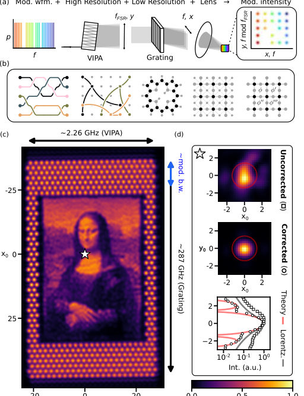
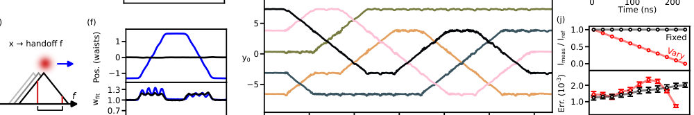
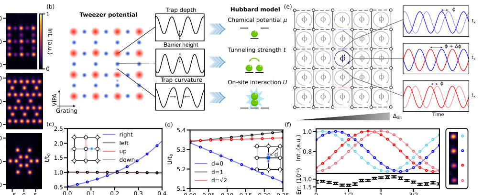
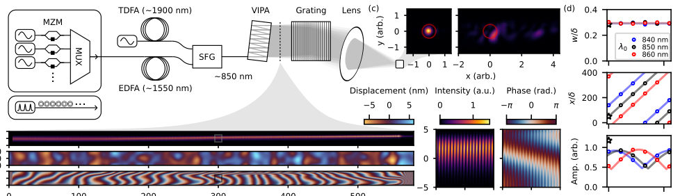
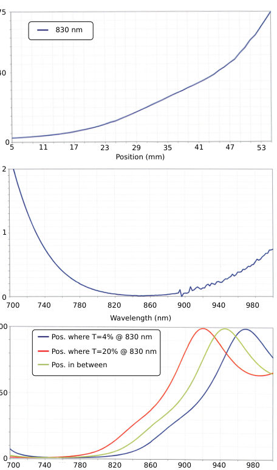
Summary. The paper introduces a novel dispersive spatial light modulator (dSLM) that achieves unprecedented speed and resolution for shaping optical fields. This system allows for the ultrafast, arbitrary programming of potential landscapes in arrays of ultracold atoms. By doing so, it enables advanced quantum simulations, such as controlling all parameters of the Hubbard model and generating artificial magnetic fluxes.
Why it may be interesting. This work directly addresses the engineering bottleneck in quantum simulation by providing a high-speed, high-resolution tool to implement complex, time-dependent Hamiltonians on cold atom platforms.
Main problem. The challenge is developing an optical system capable of ultrafast and high-resolution spatial light modulation to precisely control programmable arrays of ultracold atoms.
Main result. The authors present a dispersive spatial light modulator (dSLM) achieving high speed and resolution, enabling time-dependent control over Hubbard model parameters and fast, arbitrary manipulation of atomic tweezers.
Method. The system uses a dSLM pairing a Virtual Interdigitated Phase Array (VIPA) with a diffraction grating to generate arbitrary, high-resolution, and high-frame-rate optical patterns.
Model / system. The platform is programmable arrays of ultracold atoms, which are used to simulate quantum models like the Hubbard model. Control is achieved by shaping optical fields to modulate local chemical potentials, tunneling amplitudes, and on-site interactions.
Key observables. Intensity resolution ($10^{-3}$), frame rate ($>84$ MFPS), spatial resolution ($83 imes 52$ beam waists), and programmable Hubbard parameters ($\mu, t, U$).
Important parameters / regimes. Frame rate $>84$ MFPS; spatial resolution of $83 imes 52$ waists; control over local chemical potentials, tunneling amplitudes, and artificial magnetic flux.
Assumptions / limitations. The analysis assumes Gaussian beam profiles and uses perturbative corrections to compensate for coupling between control parameters; the initial demonstration is limited by the bandwidth of the modulator used.
Figures summary. Figures illustrate the dSLM principle, the real-time control of tweezer movement and braiding, and the application of the system to program Hubbard model parameters in various lattice geometries.
Paper structure. The paper introduces the need for advanced optical control, details the dSLM mechanism using VIPA and grating, demonstrates its performance metrics (speed/resolution), and finally applies the system to program and simulate complex quantum models like the Hubbard model, including flux generation.
Programmable arrays of ultracold atoms are a leading platform for quantum computation and simulation, enabling state-of-the-art implementations of quantum error correction, and analog simulations of Hubbard models that address open problems in condensed matter physics. In these systems, all local control is mediated through precisely shaped optical fields, and so the challenge of managing many-body quantum states becomes an exercise in optical design. In particular, one wishes for fast, flexible control with low disorder and heating, and access to large arrays with many atoms. An ideal optical system therefore must generate arbitrary patterns with high spatial resolution and low disorder, and alter these patterns on a timescale that is faster than the relevant atomic dynamics. Here, we present an optical system that is comparable to previous approaches in scale, while advancing all other axes. We demonstrate arbitrary pattern generation with $10^{-3}$ intensity resolution, a frame rate of $>84$ MFPS (megaframes per second), and a spatial resolution of $83 \times 52$ beam waists (with $11 \times 52$ waists accessible via a single $40$ GHz electro-optic modulator). These capabilities unlock a new class of experiments. We develop and numerically validate a scheme for fully programmable Hubbard models, with time-dependent control over local chemical potentials, tunneling amplitudes, on-site interactions, and patterns of artificial magnetic flux. The same architecture performs fast, arbitrary permutations of tweezers in 2D, decoupling optical constraints from the design of high-rate error-correcting codes.
Authors: Mio Poortvliet, Petr Steindl, Wolfgang Löffler
Type: both · Category: other · PDF: https://arxiv.org/pdf/2608.17798v1
Analysis basis: full PDF text, analyzed in chunks
Topic relevance: 🔥 methods for driven-dissipative 4/5 · 🔥 quantum optics experiment 4/5 · Tavis-Cummings & cavity-many-emitter 3/5 · analog quantum simulation 3/5 · driven-dissipative phase transition 3/5 · quantum measurements 3/5 · Dicke superradiance 2/5 · Keldysh / 2PI / non-Gaussian methods 2/5 · correlated / nonlocal dissipation 2/5 · non-equilibrium universality 2/5 · superradiant laser 2/5 · Full counting statistics 1/5 · interference shaping light 1/5 · scars & prethermalization 1/5
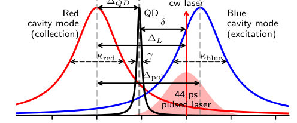
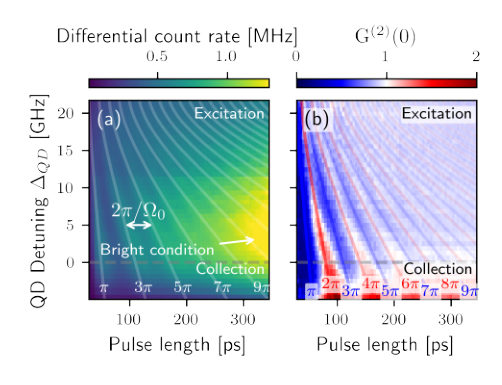
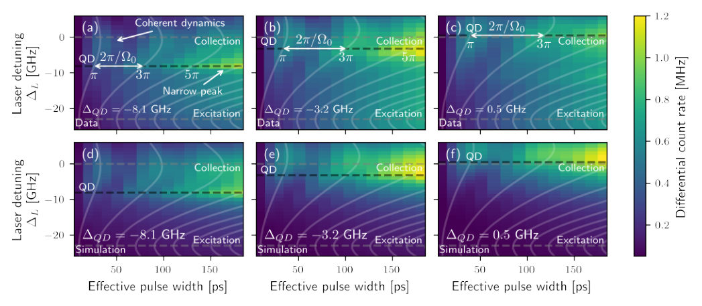
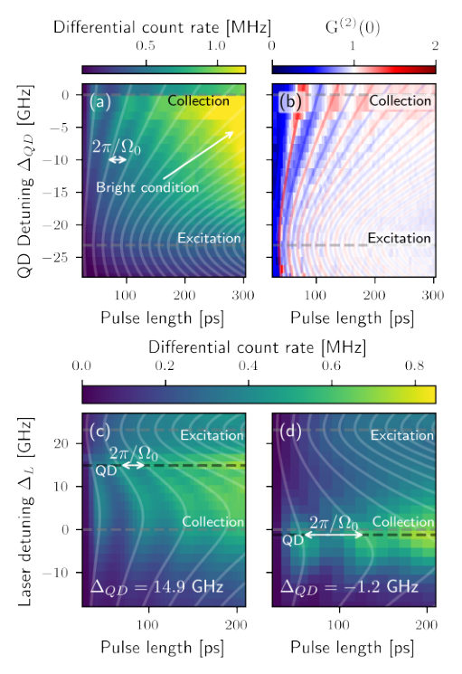
Summary. This paper investigates quantum dot cavity-QED interactions in a challenging intermediate regime where multiple timescales are comparable. Using a quantum master-equation model, the authors characterize the interplay between excitation and emission processes, predicting unique spectral patterns. The findings provide guidelines for optimizing single-photon purity by controlling detuning and pulse shaping.
Why it may be interesting. This work directly addresses the non-trivial dynamics in cavity QED, moving beyond simple pulsed or steady-state approximations. The development of a master equation for this intermediate regime is crucial for accurately modeling quantum light sources.
Main problem. The study investigates the complex dynamics of resonant cavity-quantum system interactions in the intermediate regime, where pulse duration, coupling, and decoherence rates are comparable.
Main result. The authors reveal an interplay between cavity-enhanced excitation and Purcell-enhanced emission, leading to characteristic warped chevron patterns in the system's response.
Method. They developed and applied a quantum master-equation model to treat excitation-light coherent states in photon number space, validated against time-resolved fluorescence and $g^{(2)}(0)$ measurements.
Model / system. The physical system is a self-assembled InGaAs quantum dot coupled to a polarization-split optical microcavity. The dynamics are governed by a quantum master equation that must account for intermediate coupling regimes.
Key observables. Resonance fluorescence (differential count rate), second-order correlation function $g^{(2)}(0)$, and Rabi oscillations.
Important parameters / regimes. The intermediate regime where cavity linewidth ($\kappa$), QD decay ($\gamma$), and coupling ($g$) are comparable; polarization splitting ($\Delta_{pol}$); and varying pulse durations (17 ps to 1 ns).
Assumptions / limitations. The model assumes the system is driven by programmable laser pulses and analyzes the crossover between pulsed and continuous-wave limits.
Figures summary. Figures show resonance fluorescence vs. detuning and pulse width, demonstrating Rabi oscillations and anti-bunching in $g^{(2)}(0)$; other figures illustrate the dependence of fluorescence on detuning and pulse area.
Paper structure. The paper progresses by first establishing the need to model the intermediate regime, developing the quantum master equation, and then using this model to predict and explain observed features like warped chevron patterns and optimal single-photon purity conditions.
Resonant cavity-quantum system interactions are well understood in the pulsed coherent and continuous-wave steady-state limits, but not much in between. We investigate the intermediate regime, where pulse duration, coupling, decoherences, and decays occur on comparable timescales, and pulse bandwidth matches cavity splitting and detunings. We reveal an interplay of cavity-enhanced excitation and Purcell-enhanced emission leading to warped chevron patterns. We develop a quantum master-equation model that efficiently treats the excitation-light coherent states in photon number space and reproduces the experimental data. Using these results we identify how polarization-split cavities can optimize single-photon purity and emission probability.
Authors: Ming-Jie Tao, Yi-Ting Wang, Jing Li, Hongsheng Hou, Xiang-Ping Jiang, Lei Pan
Type: theory · Category: disordered systems and neural networks · PDF: https://arxiv.org/pdf/2608.17937v1
Analysis basis: full PDF text, analyzed in chunks
Topic relevance: 🔥 driven-dissipative phase transition 4/5 · 🔥 methods for driven-dissipative 4/5 · correlated / nonlocal dissipation 3/5 · non-equilibrium universality 3/5 · Keldysh / 2PI / non-Gaussian methods 2/5 · quantum measurements 2/5 · analog quantum simulation 1/5 · scars & prethermalization 1/5
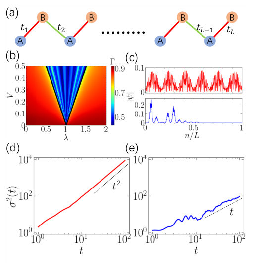
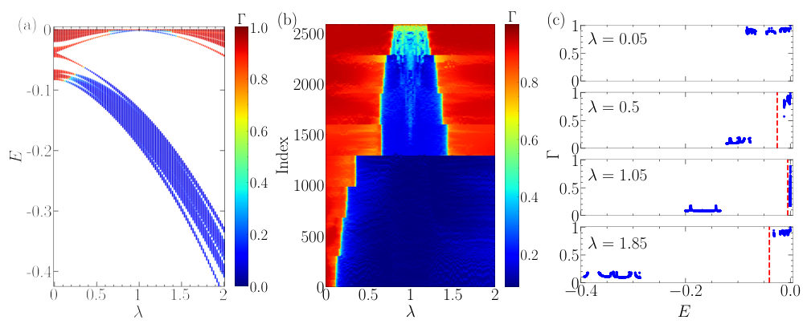
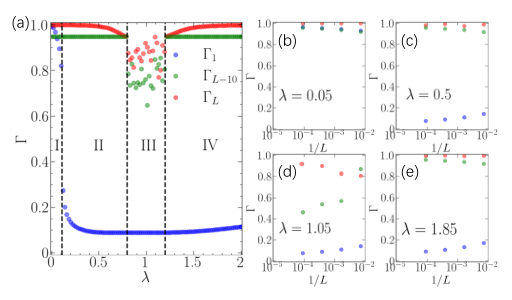
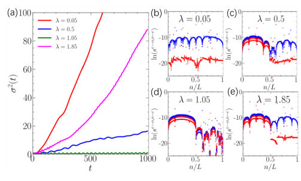
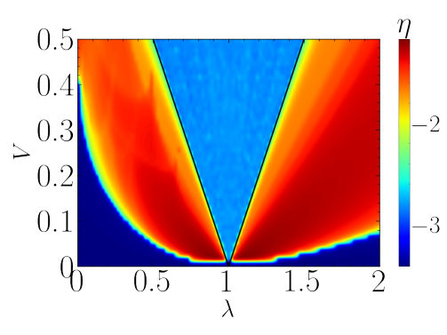
Summary. This work analyzes localization in a quasiperiodic quantum system subjected to pure dephasing. By mapping the dynamics to an effective classical Markov process, the authors demonstrate that dephasing induces distinct mobility edges. This reveals that dephasing is a powerful mechanism capable of stabilizing and controlling multiple distinct transport regimes (extended, critical, localized) within the system's spectrum.
Why it may be interesting. It provides a concrete example of how environmental coupling (dephasing) can actively control and reshape localization transitions in complex quasiperiodic systems, moving beyond the simple expectation of decoherence always destroying localization.
Main problem. The paper investigates how pure dephasing affects localization behavior in a dimerized off-diagonal Aubry-André-Harper (AAH) quasicrystal.
Main result. Pure dephasing can induce distinct Mobility Edges (MEs), including anomalous ones, allowing for the coexistence of extended, multifractal critical, and localized states in the dissipative system.
Method. The analysis uses the Lindblad master equation, applying adiabatic elimination in the strong-dephasing limit to derive an effective classical Markov transition matrix.
Model / system. The system is a 1D tight-binding model of free spinless fermions on a dimerized off-diagonal AAH quasicrystal, governed by a Lindblad master equation.
Key observables. Inverse Participation Ratio (IPR), fractal dimension ($\Gamma_k$), wave-packet spreading variance ($\sigma^2(t)$), and level spacing statistics.
Important parameters / regimes. Dephasing rate ($\gamma$), quasiperiodic modulation strength ($\lambda, V$), and the ratio of dephasing to hopping ($ \gamma \gg t$).
Assumptions / limitations. The strong-dephasing limit ($\gamma \gg t$) allows for the adiabatic elimination of coherence terms, reducing the dynamics to a classical Markov process.
Figures summary. Figures illustrate the global phase diagram in $(\lambda, V)$ space showing boundaries for extended, critical, and localized phases, alongside time evolution plots of wave-packet variance ($\sigma^2(t)$) confirming different transport regimes.
Paper structure. The paper reviews localization in closed systems, introduces the open system formalism via the Lindblad equation, and finally applies the strong-dephasing limit to derive the Markov matrix and construct the global dissipative phase diagram.
Anderson localization and the mobility edge (ME) have been extensively studied in isolated aperiodic systems. Conventional theory suggests that dephasing and decoherence should disrupt localization and facilitate transport. In this work, we investigate localization behaviors in a dimerized off-diagonal Aubry-Andre-Harper (AAH) quasicrystal subject to on-site pure dephasing. In the strong-dephasing limit, we apply adiabatic elimination within the Lindblad master equation framework to derive an effective classical Markov transition matrix that governs the dissipative relaxation dynamics. Counterintuitively, we demonstrate that pure dephasing can induce distinct MEs, including both conventional MEs separating extended and localized states and anomalous MEs separating multifractal critical states from localized states, even when all eigenstates of the original closed coherent system are delocalized or multifractal. Using fractal dimension finite-size scaling, wave-packet spreading dynamics, and energy spectrum statistics, we numerically verify the coexistence of fully extended, multifractal critical, and localized regions within the relaxation spectrum of the dissipative system, and construct the global dissipative phase diagram. These findings reveal that dephasing can see as a powerful mechanism for controlling localization transitions, thus enhancing our understanding of dissipative quasicrystal systems.
Authors: Michiel Yzewyn, Michiel Wouters
Type: theory · Category: statistical mechanics · PDF: https://arxiv.org/pdf/2608.17602v1
Analysis basis: full PDF text, analyzed in chunks
Topic relevance: 🔥 non-equilibrium universality 4/5 · analog quantum simulation 3/5 · driven-dissipative phase transition 3/5 · Keldysh / 2PI / non-Gaussian methods 2/5 · Tavis-Cummings & cavity-many-emitter 2/5 · correlated / nonlocal dissipation 2/5 · methods for driven-dissipative 2/5 · Frenkel-Kontorova 1/5 · superradiant laser 1/5
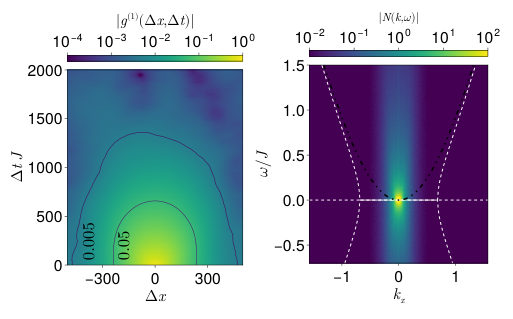
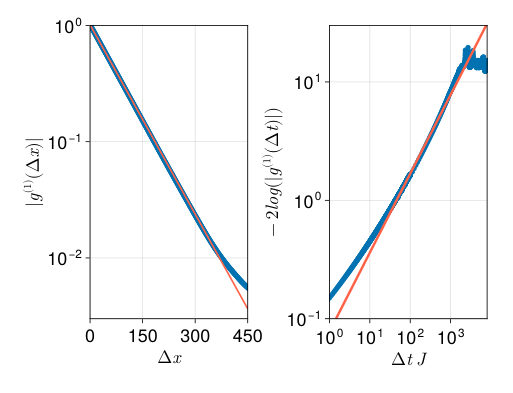
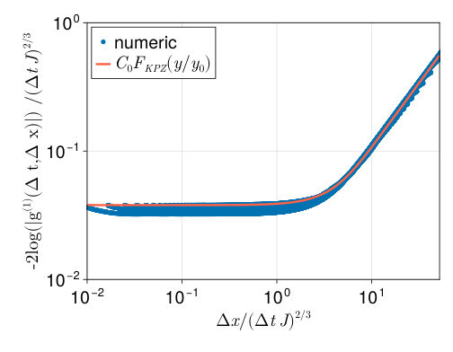
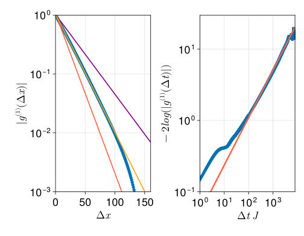
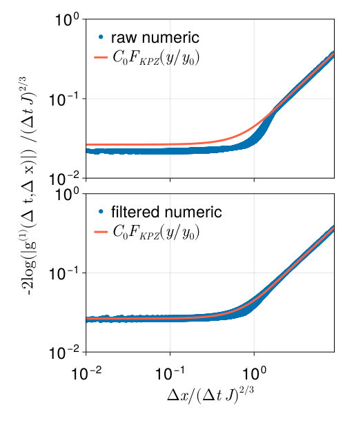
Summary. This work analyzes the coherence decay in photon condensates, which are driven-dissipative quantum systems. The authors demonstrate that the phase dynamics fall into the Kardar-Parisi-Zhang (KPZ) universality class, a finding robust even when density fluctuations are large. The research highlights the importance of spectral filtering in revealing the underlying universal physics.
Why it may be interesting. It connects non-equilibrium dynamics in quantum optics (photon BEC) to a universal critical phenomenon (KPZ scaling), providing insights into how dissipation and driving affect universal scaling laws in many-body systems.
Main problem. The study investigates whether the phase dynamics of driven-dissipative photon condensates exhibit Kardar-Parisi-Zhang (KPZ) scaling, particularly in regimes characterized by large density fluctuations.
Main result. The first-order coherence decay confirms KPZ scaling, even in the large density fluctuation (grand canonical) regime, although achieving the universal scaling requires spectral filtering.
Method. The analysis combines deriving continuum equations from a classical field model with numerical simulations and analytical comparison of scaling exponents.
Model / system. The system is modeled as photon condensates in a 1D array of dye-filled microcavities, treated as a driven-dissipative system coupled to excited molecular states.
Key observables. First-order coherence decay, spatiotemporal coherence $g^{(1)}(\Delta x, \Delta t)$, and the scaling function for phase fluctuations.
Important parameters / regimes. The analysis distinguishes between the large density fluctuation (grand canonical) and small density fluctuation (canonical) regimes.
Assumptions / limitations. Initial approximations assume small density fluctuations for analytical derivations, but the numerical work extends to the large fluctuation regime. Spectral filtering is used to recover universal scaling.
Figures summary. Figures show the spatiotemporal first-order coherence decay, demonstrating collapse onto the universal KPZ scaling curve, especially after applying a spectral filter.
Paper structure. The paper progresses from establishing the physical model (driven-dissipative system) to deriving the phase dynamics, confirming KPZ scaling numerically in the grand canonical regime, and finally discussing the necessity of spectral filtering to recover universal behavior.
Bose-Einstein condensates of photons in dye filled microcavities are known to feature many properties of the ideal bose gas at thermal equilibrium. Nevertheless, the finite photon life time renders them driven dissipative systems where losses are balanced by continuous driving by a pump laser. We show here with simulations based on a classical field model that their driven-dissipative nature causes their first order coherence to feature Kardar-Parisi-Zhang (KPZ) scaling, a phenomenon well known in the related condensates of exciton-polaritons. Remarkably, we find that the KPZ scaling even occurs in a regime with large density fluctuations. We discuss the modification of the scaling by the occupation of excited states and how to recover the universal scaling behavior by spectral filtering.
Authors: Arpit Arora, Emily M. Been, William Munizzi, Joel Wang, Taylor L. Patti, Aaron Chou, Prineha Narang
Type: both · Category: other · PDF: https://arxiv.org/pdf/2608.17020v1
Analysis basis: full PDF text, analyzed in chunks
Topic relevance: 🔥 QC/QI experiment 4/5 · analog quantum simulation 3/5 · driven-dissipative phase transition 2/5 · methods for driven-dissipative 2/5 · quantum measurements 2/5 · Full counting statistics 1/5 · Keldysh / 2PI / non-Gaussian methods 1/5 · correlated / nonlocal dissipation 1/5 · non-equilibrium universality 1/5 · quantum optics experiment 1/5
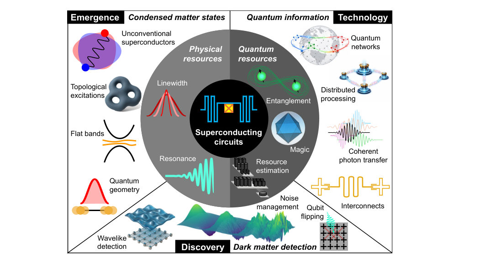
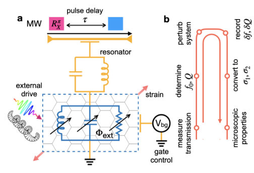
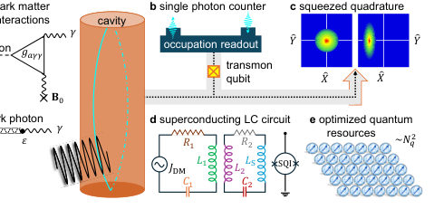
Summary. This review establishes superconducting circuits as universal quantum laboratories, capable of probing fundamental physics—from exotic superconducting symmetries to dark matter interactions. It details the advanced measurement techniques used and highlights the convergence of these hardware platforms with quantum information science, including the role of AI in advancing quantum control.
Why it may be interesting. It provides a comprehensive overview of how superconducting circuits bridge fundamental condensed matter physics (e.g., unconventional superconductivity, topological phases) with cutting-edge quantum information processing capabilities.
Main problem. The paper reviews the role of superconducting circuits (SCs) as general-purpose quantum laboratories, unifying their utility across condensed matter, high energy, and quantum information sciences.
Main result. SCs are shown to be mature, versatile platforms capable of simultaneously acting as fundamental research subjects and as high-precision probing tools for exotic quantum phenomena.
Method. The review synthesizes diverse experimental and theoretical techniques, including dispersive readout, measuring frequency shifts, and integrating AI/ML for circuit design and signal extraction.
Model / system. The primary physical system is the Superconducting Circuit (SC), which serves as the platform. These circuits are coupled to various quantum materials or used to host superconducting qubits, allowing access to macroscopic quantum states.
Key observables. Frequency shifts in resonators, complex conductivity ($\sigma$), single-photon sensitivity, superconducting order parameters (e.g., p-wave nodal order), and entanglement measures.
Important parameters / regimes. Energy scales ranging from few GHz down to weak-coupling regimes; decoherence rates; and the fidelity of quantum control.
Assumptions / limitations. The development relies on the ability to maintain coherence and the ongoing effort to mitigate limitations like dielectric loss and gate errors.
Figures summary. Figure 1 conceptually maps SC platforms to physical and quantum resources for various applications. Table I summarizes the toolbox, including high-Q resonators, dispersive readout, and Josephson nonlinearities.
Paper structure. The paper traces the technical evolution of SC architectures, reviewing their dual capacity (subject vs. tool), detailing specific measurement techniques for probing quantum materials, and concluding with the integration of advanced quantum control and AI methods.
Superconducting circuits (SCs) are the cornerstone of modern quantum technology, enabling scalable computing through coherent control of macroscopic quantum states. Through a legacy that predates modern quantum computing, SCs have emerged as high-precision instruments for discovery. In this review, we highlight the role of SCs as general-purpose quantum laboratories, outlining the emerging landscape of correlated matter-circuit science. We review and unify the capabilities of superconducting quantum hardware across condensed matter, high energy and quantum information sciences. We trace the technical evolution of these architectures, illustrating how their foundational development has culminated in a toolkit for resolving the complexities of macroscopic quantum states.
Authors: Wen-Jing Yu, Yue-Mei Sun, Xin-Yu Wang, Liang-Jun Zhai
Type: theory · Category: disordered systems and neural networks · PDF: https://arxiv.org/pdf/2608.17527v1
Analysis basis: full PDF text, analyzed in chunks
Topic relevance: 🔥 driven-dissipative phase transition 4/5 · 🔥 non-equilibrium universality 4/5 · methods for driven-dissipative 3/5 · Keldysh / 2PI / non-Gaussian methods 1/5 · analog quantum simulation 1/5 · correlated / nonlocal dissipation 1/5
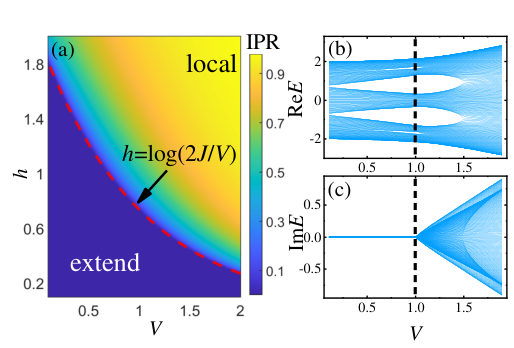
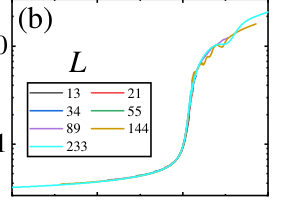
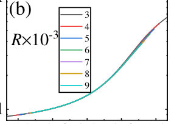
Summary. This paper investigates localization transitions in a non-Hermitian Aubry-André model featuring on-site gain and loss. Using finite-size scaling, the authors determine that this system belongs to a unique universality class, distinct from standard Hermitian or non-reciprocal models. Furthermore, they successfully generalize the Finite-Time Scaling framework to describe the non-equilibrium dynamics across the critical point in this complex non-Hermitian setting.
Why it may be interesting. This work directly addresses the interplay between non-Hermiticity and localization, which is a major frontier in open quantum systems and condensed matter theory. The extension of FTS to non-Hermitian, gapless initial states is a significant methodological advance.
Main problem. The study investigates the critical scaling behavior and driven dynamics of localization transitions in non-Hermitian systems incorporating on-site gain and loss.
Main result. The gain-loss mechanism establishes a new universality class for localization transitions, characterized by distinct critical exponents, and validates the applicability of the Finite-Time Scaling framework to these non-Hermitian systems.
Method. The research employs finite-size scaling analyses on observables like the localization length, Inverse Participation Ratio (IPR), and energy gap, alongside the Finite-Time Scaling (FTS) framework for driven dynamics.
Model / system. The system analyzed is the non-Hermitian Aubry-André (AA) model, modified by the inclusion of on-site gain and loss terms. The Hamiltonian structure is defined by hopping terms and a potential modulated by a quasiperiodic function and the gain/loss parameter.
Key observables. Localization length ($\xi$), Inverse Participation Ratio (IPR), Energy Gap ($\Delta E_g$), and critical exponents ($ u, s, z$).
Important parameters / regimes. The quasiperiodicity parameter $\gamma$, the hopping amplitude $J$, the potential strength $V$, and the gain/loss parameter $h$.
Assumptions / limitations. The analysis relies on the applicability of the FTS framework, which requires the condition $z' < r$ to be satisfied for the gapless initial state.
Figures summary. Figure 1 illustrates the phase diagram showing the critical line separating extended and localized phases. Figure 2 displays spatial wave function distributions in the extended, critical, and localized regimes.
Paper structure. The paper first establishes the static critical scaling by analyzing the phase diagram and extracting critical exponents. It then extends the analysis to non-equilibrium dynamics, verifying the applicability of the FTS framework for driven evolution across the critical point.
The interplay between non-Hermiticity and localization has attracted considerable interest, yet the driven dynamics of localization transitions in non-Hermitian systems with on-site gain and loss remains largely unexplored. Here we investigate the critical scaling behavior and driven dynamics of the non-Hermitian Aubry-André (AA) model with on-site gain and loss. Through finite-size scaling analyses of the localization length, the inverse participation ratio (IPR), and the energy gap, we extract the critical exponents $ν= 1.00(2)$, $s = 0.7965(2)$, and $z = 1.999(2)$. These exponents are different from those of both the Hermitian AA model and the nonreciprocal hopping AA model, particularly the IPR exponent $s$, demonstrating that the gain-loss mechanism belongs to a distinct universality class. For the driven dynamics, we focus on the case where the system is initially prepared in a gapless extended state and linearly driven across the critical point. We verify that the finite-time scaling (FTS) framework remains applicable provided that the criterion $z' < r$ is satisfied, where $z' = 1.999(2)$ characterizes the gap closure in the extended phase and $r = z + 1/ν\approx 2.999$. The predicted FTS scaling forms for the IPR are numerically validated across a wide range of system sizes and driving rates, demonstrating that the unified scaling description can be successfully generalized to the gain-loss type non-Hermitian AA model. Our work not only establishes the gain-loss AA model as a new universality class of localization transitions but also extends the applicability of the FTS framework to non-Hermitian systems with gapless initial states.
Authors: Jeff Leiberton, Marcos Rigol
Type: theory · Category: quantum gases · PDF: https://arxiv.org/pdf/2608.16980v1
Analysis basis: full PDF text, analyzed in chunks
Topic relevance: 🔥 scars & prethermalization 4/5 · analog quantum simulation 3/5 · non-equilibrium universality 3/5 · Keldysh / 2PI / non-Gaussian methods 2/5 · driven-dissipative phase transition 1/5 · methods for driven-dissipative 1/5
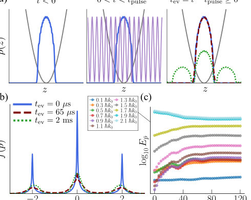
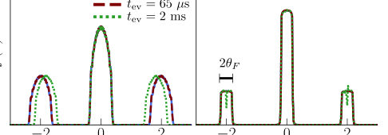
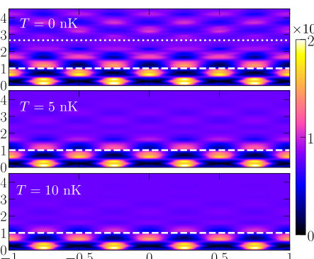
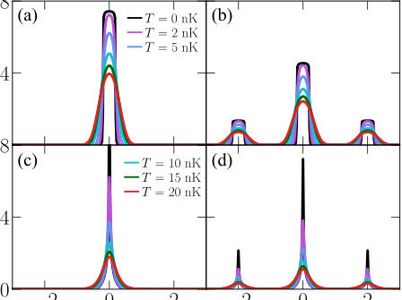
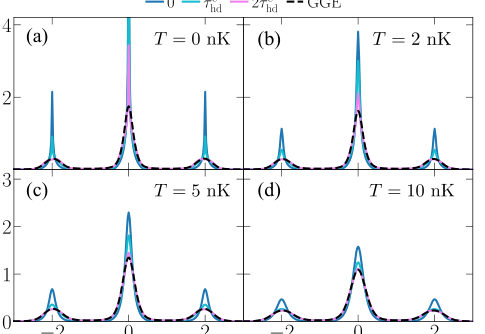
Summary. This theoretical paper examines how non-zero initial temperatures influence the rapid onset of hydrodynamic behavior (hydrodynamization) and subsequent local equilibration (prethermalization) in 1D Bose gases. By analyzing the hard-core boson model after a quench, the authors find that higher temperatures accelerate these processes by broadening the initial momentum distribution. This introduces a new temperature-dependent dephasing time as a key diagnostic tool.
Why it may be interesting. This work directly addresses non-equilibrium dynamics in ultracold atomic systems, providing quantitative insights into how thermal initial conditions modify universal dynamical processes like hydrodynamization, which is crucial for understanding quench dynamics in quantum simulators.
Main problem. The study investigates how non-zero initial temperatures affect the timescales associated with hydrodynamization and prethermalization in 1D Bose gases following a quench.
Main result. Increasing the initial temperature shortens both the damping time of hydrodynamization oscillations and the prethermalization time, which is attributed to the broadening of the initial rapidity distribution.
Method. The authors use theoretical calculations, specifically analyzing the one-body density matrix for the non-interacting Fermi gas limit of the Lieb-Liniger model, which is applicable in the Tonks-Girardeau regime.
Model / system. The system is a 1D Bose gas, modeled by the Lieb-Liniger Hamiltonian, and the analysis focuses on the homogeneous case using hard-core bosons. The dynamics are probed via a Bragg-pulse quench.
Key observables. Hydrodynamization coherence time, damping time of oscillations, prethermalization time, and the nonzero-temperature dephasing time ($ au_{dp}$).
Important parameters / regimes. Initial temperature ($T$), quench parameters (Bragg pulse), and the system's interaction regime (Tonks-Girardeau limit).
Assumptions / limitations. The analysis assumes the system is nearly integrable, allowing the use of Generalized Hydrodynamics (GHD), and treats the rapidity distribution as approximately conserved in the homogeneous box trap.
Figures summary. Figures illustrate the experimental sequence (Bragg pulse quench) and show the evolution of rapidity distributions for both harmonic and box traps, comparing different time regimes.
Paper structure. The paper builds upon previous ground-state studies by incorporating finite temperature effects. It details the theoretical framework for calculating one-body density matrices and then analyzes the resulting timescales for hydrodynamization and prethermalization as a function of initial temperature.
Hydrodynamization refers to the remarkably rapid process in relativistic heavy-ion collisions by which hydrodynamic descriptions become applicable. Following the observation of analogous behavior in ultracold one-dimensional (1D) Bose gases, hydrodynamization has been conjectured to be a universal dynamical phenomenon in quantum systems following high-energy quenches. Theoretical studies in this cold-atom setting have so far been restricted to quenches from ground states. Here we study how nonzero temperatures affect hydrodynamization. Specifically, using a homogeneous 1D gas of hard-core bosons, we explore how the initial temperature affects the timescales associated with hydrodynamization and prethermalization following a Bragg-pulse quench. We find that while the hydrodynamization coherence time remains unchanged, increasing temperature shortens both the damping time of the hydrodynamization oscillations and the prethermalization time. We argue that this is mainly the result of the broadening of the initial rapidity distribution, and introduce a nonzero-temperature dephasing time defined in terms of the extent of the rapidity distribution.
Authors: Áttis V. M. Marino, Rhombik Roy, M. A. Caracanhas, N. D. Chavda, Antônio M. S. Macêdo, V. S. Bagnato, Robin P Sagar, B. Chakrabarti
Type: theory · Category: quantum gases · PDF: https://arxiv.org/pdf/2608.17076v1
Analysis basis: full PDF text, analyzed in chunks
Topic relevance: 🔥 non-equilibrium universality 4/5 · 🔥 scars & prethermalization 4/5 · analog quantum simulation 3/5 · methods for driven-dissipative 2/5
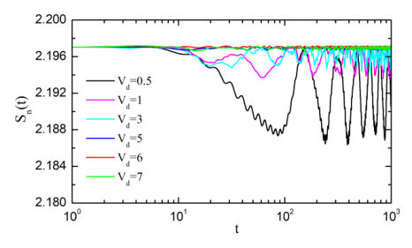
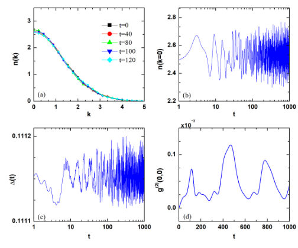
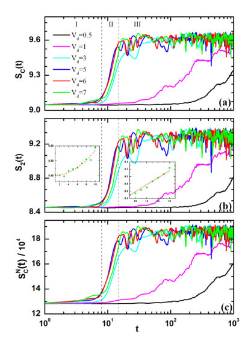
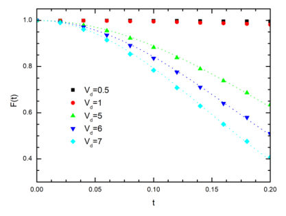
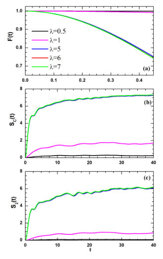
Summary. This study examines how strongly interacting bosons in a Mott lattice evolve after a sudden quench. While local measurements suggest the system retains its insulating, Mott-like order, global entropy measures show clear, rapid relaxation consistent with random matrix theory (GOE). This reveals a hidden ergodic relaxation occurring in the wavefunction space, even when the system appears locally frozen.
Why it may be interesting. This work directly addresses the fundamental question of whether global quantum chaos/relaxation manifests in measurable, low-order observables in strongly correlated quantum systems, which is central to understanding thermalization in quantum gases.
Main problem. The paper investigates the non-equilibrium dynamics of strongly interacting bosons following a sudden quench in a bichromatic Mott lattice.
Main result. It reveals an emergent hidden ergodic relaxation in the global wavefunction statistics (entropy growth toward GOE), which occurs independently of the persistent, localized Mott-like order observed in experimentally accessible observables.
Method. The dynamics are simulated using the MCTDHB method, analyzing both global Hilbert-space spreading measures (entropies) and local observables (momentum distribution, correlation functions).
Model / system. The system consists of strongly interacting bosons confined in a finite one-dimensional bichromatic Mott lattice. The dynamics are initiated by quenching the secondary lattice potential.
Key observables. Coefficient Shannon entropy ($S_C$), second Rényi entropy ($S_2$), momentum distribution $n(k, t)$, and local two-body Glauber correlation function $g^{(2)}(0, 0; t)$.
Important parameters / regimes. Strong interaction regime, quench strength ($V_d$), and system size ($N=9$ bosons in $S=9$ sites).
Assumptions / limitations. The analysis relies on the MCTDHB framework and assumes that the observed entropy growth characterizes the global relaxation process.
Figures summary. Figures illustrate the contrast between the slow evolution of local observables (Mott order persistence) and the rapid, GOE-like growth of global entropy measures ($S_C, S_2$) following the quench.
Paper structure. The paper establishes the physical model and quench protocol, presents diagnostics for both local (low-order) and global (entropy) observables, and then contrasts the results to argue for the existence of hidden ergodic relaxation.
We investigate the nonequilibrium dynamics of strongly interacting bosons in a finite bichromatic Mott lattice following a sudden quench of the secondary lattice amplitude. The coefficient entropies and second Rényi entropy exhibit pronounced growth toward their Gaussian Orthogonal Ensemble (GOE) predictions from random-matrix theory, consistent with GOE-like statistical spreading in the employed multiconfigurational representation. In striking contrast, experimentally accessible observables, including the momentum distribution, fragmentation, and Glauber correlation functions, remain nearly unchanged throughout the evolution. For the sampled strong quenches, the coefficient entropies, second Rényi entropy, and the $N$-body coefficient spreading collapse onto a common relaxation trajectory that becomes largely independent of the perturbation strength. Our results reveal an emergent hidden ergodic relaxation beneath the persistent local Mott-like order. An effective embedded random-matrix model captures the qualitative crossover from restricted to extensive Hilbert-space spreading, providing an interpretive framework for the observed relaxation dynamics.
Authors: Shilpa Prakash, Mustansir Barma, Kabir Ramola
Type: theory · Category: statistical mechanics · PDF: https://arxiv.org/pdf/2608.18016v1
Analysis basis: full PDF text, analyzed in chunks
Topic relevance: 🔥 non-equilibrium universality 4/5 · driven-dissipative phase transition 3/5 · Keldysh / 2PI / non-Gaussian methods 2/5 · methods for driven-dissipative 2/5 · Frenkel-Kontorova 1/5
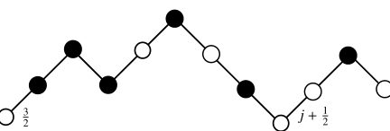
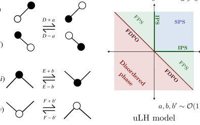
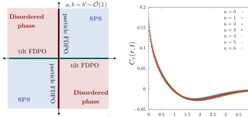
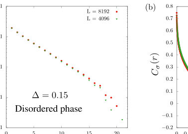
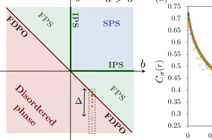
Summary. This work analyzes the Light-Heavy model to understand how critical behavior changes when the system transitions from a strongly driven, unscaled regime (exhibiting FDPO) to a weakly driven, scaled regime. The authors demonstrate that the underlying physics shifts from multi-mode, fluctuation-dominated ordering to a single-mode, anomalous correlation decay, providing a detailed study of crossover scaling in non-equilibrium statistical mechanics.
Why it may be interesting. The detailed analysis of crossover scaling between different critical universality classes (FDPO vs. single-mode) provides a rich theoretical playground for understanding how external driving or scale separation fundamentally alters critical dynamics in non-equilibrium systems.
Main problem. The paper investigates the critical behavior and crossover scaling between two distinct regimes of the Light-Heavy (LH) model: the unscaled (uLH) and the scaled (sLH) limits.
Main result. The unscaled regime exhibits Fluctuation-Dominated Phase Ordering (FDPO) with multi-mode dynamics, whereas the scaled regime shows dynamics controlled by a single dominant mode and anomalous $1/\sqrt{L}$ correlations, proving the critical state is non-FDPO.
Method. The study employs analytical derivations, including deriving overdamped Langevin equations and using scaling functions to link the off-critical and critical regimes.
Model / system. The Light-Heavy (LH) model describes two coupled species (light/heavy particles) interacting with a fluctuating surface (tilts). The dynamics are analyzed in two limits: uLH (comparable drive/diffusion) and sLH (weak drive, diffusion dominant).
Key observables. Two-point correlation functions ($\langle ho ho angle - \langle ho angle^2$), cluster size distribution $P(l)$, and the correlation length ($\xi$).
Important parameters / regimes. The ratio between the particle/tilt drive and the diffusion constant, which defines the transition between the uLH and sLH regimes.
Assumptions / limitations. The analysis relies on mapping the dynamics to an overdamped Langevin equation in the scaled limit, and the comparison between the FDPO behavior in the unscaled limit and the single-mode dynamics in the scaled limit.
Figures summary. Figures illustrate the schematic configuration of the LH model, phase diagrams for both uLH and sLH regimes, and plots showing the collapse of the tilt-tilt correlation function under rescaling.
Paper structure. The paper first establishes the physical model and its two regimes (uLH/sLH). It then analyzes the critical behavior in the uLH limit, identifying FDPO. Subsequently, it analyzes the sLH limit, deriving the effective dynamics and showing the resulting correlations differ fundamentally from the FDPO state.
The Light-Heavy (LH) model involves two species of particles (light and heavy) coupled with a fluctuating surface (described by tilts). The dynamics include the inherent diffusion of the particles (or tilts) as well as the drive provided by the tilts (or particles). When the two are of similar magnitude, the system lies in the unscaled (uLH) regime, while a significantly weaker drive leads to the scaled (sLH) regime. In the unscaled limit, the model exhibits an order-disorder transition characterized by the fluctuation-dominated phase ordering (FDPO). In this state, interestingly the dynamics is driven by multiple modes, giving rise to dynamic clusters. Away from the critical regime the disordered phase retains vestiges of FDPO behavior on length scales smaller than the correlation length. We examine this local FDPO-like behavior by using a scaling function that links the off-critical and critical regimes. We next turn to the scaled model and show that the multi-mode dynamics present in the unscaled regime is replaced by dynamics that is effectively controlled by a single dominant mode in the scaled regime. Concurrently, the two-point correlations change from the $\mathcal{O}(1)$ FDPO form to an anomalous long-range form that decays as $1/\sqrt{L}$. Drawing on the analogy with the sABC model, where similar anomalous correlations appear at criticality, we derive an analytical expression for the two-point correlation function using the same approach used for that model.
Authors: Philipp Schüttelkopf, Mohammadamin Tajik, Federica Cataldini, Si-Cong Ji, Igor Mazets, Sebastian Erne, Nataliia Bazhan, Mojtaba Alyannezhadi, Mostafa Alyannezhadi, Jörg Schmiedmayer, Frederik Møller
Type: both · Category: quantum gases · PDF: https://arxiv.org/pdf/2608.17668v1
Analysis basis: full PDF text, analyzed in chunks
Topic relevance: 🔥 analog quantum simulation 4/5 · Keldysh / 2PI / non-Gaussian methods 2/5 · methods for driven-dissipative 2/5 · non-equilibrium universality 2/5 · Frenkel-Kontorova 1/5 · driven-dissipative phase transition 1/5
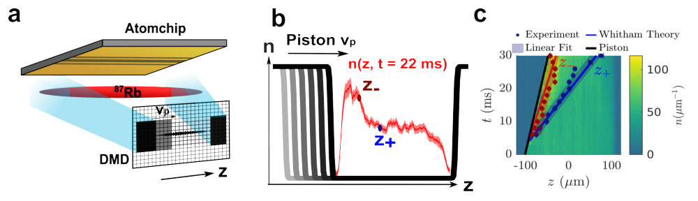
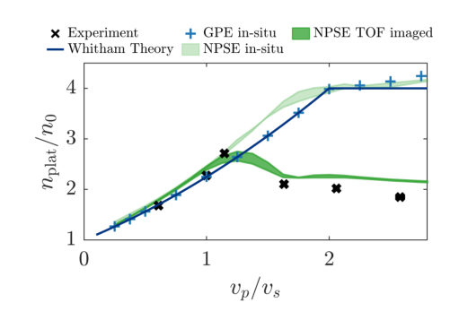
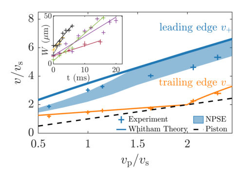
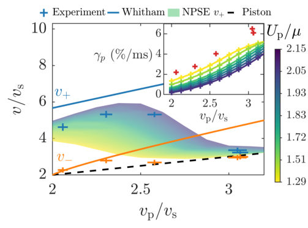
Summary. The researchers experimentally investigate dispersive shock waves in a 1D quantum Bose gas using an atomchip and a moving optical piston. By measuring shock front velocities and density profiles, they confirm the characteristic signatures of DSWs predicted by theory. This work is significant because it validates complex nonlinear wave physics in a highly controllable quantum matter platform.
Why it may be interesting. This work provides a controlled, quantitative test of fundamental nonlinear wave phenomena (DSWs) in an ultracold atomic setting, bridging complex theoretical predictions with high-precision experimental realization in a quantum gas context.
Main problem. The study of nonlinear wave breaking and its subsequent regularization by dispersion in a controlled, quantitative manner within a 1D quantum liquid.
Main result. The measured shock wave front velocities and the widening shock region exhibit characteristics consistent with theoretical predictions for dispersive shock waves (DSWs).
Method. The study combines experimental measurements using ultra-cold Bose gases with theoretical modeling based on Whitham's method and finite-temperature Non-Polynomial Schrödinger Equation (NPSE) simulations.
Model / system. The system is a quasi-1D Bose gas of $^{87} ext{Rb}$ atoms trapped on an atomchip, driven by a moving optical potential (piston). The dynamics are modeled by the NPSE, which accounts for transverse Gaussian broadening.
Key observables. Shock wave edge velocities ($v_+$ and $v_-$), shock wave width, and the plateau density ($n_{ ext{plat}}$) accumulated between the piston and the shock.
Important parameters / regimes. Piston speed ($v_p$), speed of sound ($v_s$), and the critical velocity $v_p = 2v_s$.
Assumptions / limitations. The analysis accounts for limitations such as finite temperature, time-of-flight expansion, and imaging resolution, comparing results to more complex simulations that include these effects.
Figures summary. Figures illustrate the experimental protocol using a moving piston, show measured shock edge speeds compared to theory, and compare measured plateau densities to theoretical predictions.
Paper structure. The paper details the experimental setup (piston protocol), presents theoretical predictions (Whitham's method for DSWs), and then compares quantitative measurements of shock dynamics (velocities and density) against these predictions, addressing systematic deviations due to experimental limitations.
We implement a moving boundary condition in a 1D quantum liquid to study nonlinear wave breaking and its regularization by dispersion. Programmable optical potentials allow us to compress a weakly interacting ultra-cold Bose gas trapped on an atomchip at tunable speeds of up to three times the speed of sound and we subsequently measure the quasi-in-situ density distribution to extract the shock wave edge dynamics. We resolve both leading and trailing edge velocities and observe a shock wave width that increases linearly in time, which are distinguishing features of dispersive shock waves, consistent with asymptotic predictions using Whitham's method. Quantitative agreement is found with finite temperature non-polynomial Schrödinger equation simulations, taking into account the imaging process and the finite height of the piston potential. Our results constitute a controlled, quantitative test of dispersive shock dynamics in a 1D quantum fluid and demonstrate that the coarse-grained dispersive-shock phenomenology remains robust even as the microscopic dynamics depart from the strictly integrable 1D regime.
Authors: Mikhail Umanskii, Nataliya Arefyeva, Georgy Sultanov, Alexey Rubtsov, Evgeny Polyakov
Type: theory · Category: other · PDF: https://arxiv.org/pdf/2608.18049v1
Analysis basis: full PDF text, analyzed in chunks
Topic relevance: 🔥 methods for driven-dissipative 4/5 · Keldysh / 2PI / non-Gaussian methods 3/5 · quantum measurements 2/5 · correlated / nonlocal dissipation 1/5 · driven-dissipative phase transition 1/5 · non-equilibrium universality 1/5




Summary. This paper introduces 'tape-recorder coarse graining,' a novel numerical technique for simulating open quantum systems involving fermionic reservoirs. It manages the infinite degrees of freedom by adaptively truncating reservoir modes while providing rigorous, nonperturbative error bounds. This allows for long-time, accurate simulations of interacting quantum transport phenomena.
Why it may be interesting. This work provides a sophisticated, mathematically rigorous technique for simulating open quantum systems dynamics, which is crucial for understanding energy and charge transport in nanoscale devices where environmental coupling is dominant.
Main problem. The core challenge is performing long-time, real-time simulations of interacting quantum nanostructures coupled to infinite fermionic reservoirs while maintaining computational tractability.
Main result. The developed 'tape-recorder coarse graining' method successfully enables practical long-time simulations of the full device-reservoir state, accurately reproducing known results like Landauer-Büttiker current and Coulomb blockade physics.
Method. The method reorganizes leads into incoming, active, and outgoing modes, propagating the system using only the active modes and stochastically sampling/removing outgoing modes based on derived nonperturbative upper bounds on infidelity.
Model / system. The model is a quantum point contact (QPC) with on-site repulsion, coupled to two semi-infinite fermionic leads. The system is treated using a quasiparticle representation derived via a particle-hole transformation for the leads.
Key observables. Currents ($I_L, I_R$), QPC occupations ($\langle \hat{n}_m(t) angle$), and the active mode count.
Important parameters / regimes. The relative threshold used for mode truncation, and the coupling weights defining the active/outgoing modes.
Assumptions / limitations. The derivation relies on establishing a nonperturbative upper bound on the infidelity for outgoing-mode truncation, and the method assumes the bath correlation function has a spectral representation.
Figures summary. Figures illustrate the time evolution of coupling weights ($p_{\pm}^{\alpha,\kappa}(t)$) for different mode bases (energy, Lanczos, moving-frame), showing the superior localization achieved by the moving-frame approach.
Paper structure. The paper develops the theoretical framework by defining the moving reservoir basis, deriving the necessary mathematical identities (like the conservation relation $E_{\alpha,-}(s) + E_{\alpha,+}(s) = \varepsilon_{\alpha,p}(s)$), establishing the error bounds via the Duhamel identity, and finally benchmarking the technique on various physical scenarios.
Real-time simulations of interacting nanostructures coupled to fermionic reservoirs can require a growing number of environmental degrees of freedom to retain long-lived correlations. We introduce tape-recorder coarse graining, which reorganizes each noninteracting lead into incoming, active, and outgoing modes. The device is propagated with the active modes, while outgoing modes are stochastically sampled and removed once their remaining integrated coupling falls below a prescribed threshold. For each outgoing-mode truncation, we derive a nonperturbative upper bound on the infidelity between the exact and truncated full device--reservoir states over any prescribed finite interval. The bound depends on the mode's remaining coupling weight and finite-interval response factors. Numerically, the active-mode count saturates in time at fixed relative threshold and grows logarithmically as the threshold is reduced. We benchmark the method on a two-site quantum point contact at zero temperature and maximal bias. For Lorentzian reservoirs, the dynamics agrees with converged HEOM calculations and the steady-state current with the Landauer--Büttiker result. For flat-band reservoirs with algebraically decaying correlations, it agrees with direct Schrödinger evolution before finite-size recurrences and reproduces the Landauer--Büttiker stationary current, while finite exponential HEOM decompositions remain unconverged. For interacting contacts, the method yields Coulomb-blockade peak splitting. In the noninteracting driven limit, it agrees with an exact Floquet Green-function calculation and reproduces coherent current suppression under periodic driving, which persists at finite Coulomb repulsion. Together, these benchmarks show that tape-recorder coarse graining enables practical long-time simulations of the full device--reservoir state in interacting fermionic transport.
Authors: Chayan Purkait, Bimalendu Deb
Type: theory · Category: other · PDF: https://arxiv.org/pdf/2608.17510v1
Analysis basis: full PDF text, analyzed in chunks
Topic relevance: 🔥 driven-dissipative phase transition 4/5 · methods for driven-dissipative 3/5 · non-equilibrium universality 2/5 · correlated / nonlocal dissipation 1/5 · quantum measurements 1/5
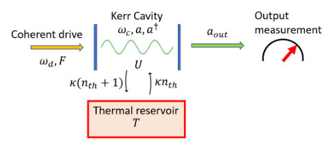
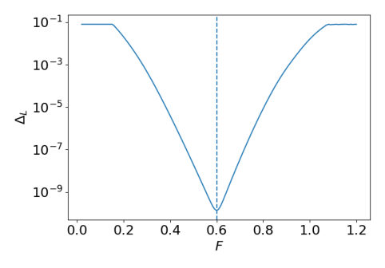
Summary. This paper demonstrates that a driven-dissipative Kerr cavity can function as a highly sensitive quantum thermometer by exploiting the physics near a dissipative phase transition precursor. The maximum temperature sensitivity, quantified by the Quantum Fisher Information, is strongly enhanced due to temperature-dependent population redistribution within the cavity's steady state. This mechanism is theoretically robust and compatible with current circuit-QED experimental platforms.
Why it may be interesting. This work bridges non-equilibrium statistical mechanics (DPTs) with quantum metrology, showing how inherent system instabilities can be harnessed to create highly sensitive quantum sensors, which is a major theme in modern AMO physics.
Main problem. The paper investigates enhancing the precision of quantum thermometry—estimating the temperature of a thermal bath—by utilizing non-equilibrium physics near a dissipative phase transition.
Main result. Strong enhancement of the Quantum Fisher Information (QFI) for temperature estimation is achieved near the finite-size precursor of the dissipative phase transition in a Kerr cavity.
Method. The analysis uses the Lindblad master equation to model the driven-dissipative system, calculating the QFI by analyzing the temperature-induced redistribution of photon number populations in the steady state.
Model / system. The system is a driven-dissipative Kerr cavity coupled to a thermal reservoir, governed by a Lindblad master equation. The physics is analyzed by examining the Liouvillian gap and the steady-state photon number.
Key observables. Quantum Fisher Information (QFI), Liouvillian gap ($\Delta_L$), steady-state average photon number ($\langle a^\dagger a angle_{ss}$), and the effective binary Fisher information ($F_{ ext{bin}}$).
Important parameters / regimes. Coherent drive strength ($F$), cavity detuning ($\Delta$), dissipation rate ($\kappa$), and bath temperature ($T$). The enhancement is optimized over a low-temperature, low-thermal-occupation regime.
Assumptions / limitations. The analysis relies on truncating the infinite Hilbert space to a finite number of Fock states ($N$) and uses an effective two-branch description to model the QFI enhancement.
Figures summary. Figures illustrate the dependence of the Liouvillian gap, steady-state photon number, and QFI on the drive amplitude, showing the correlation between the minimum gap, the photon crossover, and the QFI peak. Additional figures detail the temperature dependence of the two-branch Fisher information.
Paper structure. The paper introduces the model and the concept of quantum thermometry, analyzes the dissipative phase transition precursor using the Liouvillian gap, derives the QFI formalism, and finally presents the main results showing QFI enhancement near the precursor region.
We investigate quantum thermometry in a driven--dissipative Kerr cavity coupled to a thermal reservoir. The system exhibits a finite-size precursor of a dissipative phase transition, characterized by a pronounced minimum of the Liouvillian gap and a sharp jump in the steady-state physical observables such as average photon number at the critical driving strength. We show that this regime leads to strong enhancement of the quantum Fisher information (QFI) for temperature estimation. Using an effective two-branch description, we show that the enhancement originates from temperature-induced redistribution of the weight factors in photon number distribution between low- and high-photon-number branches, which is described by an effective binary Fisher information. By optimizing the coherent drive, the enhanced response persists over an extended low-temperature, low-thermal-occupation regime and yields a favorable relative temperature-uncertainty bound. These results identify finite-size precursors of dissipative phase transitions in Kerr-cavity platforms as useful resources for tunable nonequilibrium quantum thermometry. We further show that the predicted thermometric enhancement is accessible in a parameter regime compatible with circuit quantum electrodynamics (circuit-QED) platforms.
Authors: Maxime Perdriat, Maciej Dziewiecki, Josef-Anton Agner, Massimiliano Rossi, Frederic Merkt, Martin Frimmer, Lukas Novotny
Type: experiment · Category: other · PDF: https://arxiv.org/pdf/2608.17656v1
Analysis basis: full PDF text, analyzed in chunks
Topic relevance: 🔥 quantum measurements 4/5 · Full counting statistics 3/5 · quantum optics experiment 3/5 · analog quantum simulation 1/5
Summary. This experiment demonstrates the detection of individual momentum kicks from colliding Xe atoms with a quantum-cooled, levitated nanosphere. By using matched filtering on the nanosphere's motion, the researchers confirmed the ability to measure impulsive forces with high precision. This advances the use of levitated systems as quantum sensors for studying fundamental atomic interactions.
Why it may be interesting. This work directly bridges quantum optics (levitation, ground state cooling) with atomic physics (supersonic beams) to create an ultra-sensitive quantum sensor, which is highly relevant for open quantum systems and quantum measurement theory.
Main problem. The research aims to explore distance-dependent short-range interactions between atoms and levitated nanospheres, and to utilize these platforms for highly sensitive impulsive force sensing.
Main result. The authors successfully observed single momentum kicks from Xe atom collisions, confirming the ability to measure impulsive forces down to levels significantly below the zero-point fluctuations of the oscillator.
Method. The experiment uses matched filtering on time-traces of the levitated nanosphere's motion to extract discrete momentum kicks caused by collisions with a supersonic beam of Xe atoms.
Model / system. The physical system involves a silica nanosphere levitated in an optical tweezer and cooled to its quantum ground state. Collisions are induced by a pulsed, directional beam of Xe atoms generated via supersonic expansion.
Key observables. Momentum transfer ($\Delta p$), event rate (counts/s), and the time-of-flight ($t_{ ext{TOF}}$) of the atomic beam.
Important parameters / regimes. The minimum resolvable momentum (SQL) is calculated to be $11.8$ keV/c for the given parameters. The measured sensitivity confirms detection below $50$ keV/c.
Assumptions / limitations. The analysis assumes that the residual signal amplitude outside the primary detection window remains below the noise threshold, and it notes limitations regarding quantitative comparison with theory due to beam size effects.
Figures summary. Figures show the setup schematic, the measured phonon occupation number, and time-traces/histograms comparing the event rate from the supersonic Xe beam against the background rate from thermal atoms.
Paper structure. The paper details the setup (trapping, cooling, beam generation), the methodology (matched filtering, rate analysis), and presents results confirming the detection of directional momentum kicks from the atomic beam.
Using supersonic expansion, we create a time-gated, directional beam of Xe atoms with a narrow momentum distribution and detect their collisions with a levitated nanosphere cooled to its quantum ground state. We observe individual momentum kicks below 50 keV/c with 96% confidence and distinguish directional momentum transfer from the atomic beam against the background of thermal collisions. Our experiments constitute a first step toward the exploration of distance-dependent short-range interactions between atoms and levitated systems, as well as toward the use of levitated platforms for impulsive force sensing in previously unexplored parameter regimes.
Authors: Taichi Fujiwara, Yuhei Sekiguchi, Raustin Reyes, Toshiharu Makino, Hiromitsu Kato, Hideo Kosaka
Type: experiment · Category: quantum information and computing · PDF: https://arxiv.org/pdf/2608.17470v1
Analysis basis: full PDF text, analyzed in chunks
Topic relevance: 🔥 QC/QI experiment 4/5 · quantum optics experiment 3/5 · quantum measurements 2/5
Summary. This paper demonstrates a functional quantum repeater node using the absorption-emission process within a diamond NV center. By combining heralded photon absorption with a memory-preserving repeat-until-success emission protocol, the authors achieved a 78% process fidelity for the entire node operation. This establishes the absorption-emission approach as a viable, fundamental building block for future long-distance quantum networks.
Why it may be interesting. This work provides a concrete, experimentally validated physical implementation of a key component (the repeater node) required for scaling quantum networks, directly bridging solid-state quantum memory physics with quantum communication protocols.
Main problem. The primary challenge addressed is overcoming exponential photon loss that severely limits entanglement generation over long distances in quantum communication networks.
Main result. The authors successfully demonstrated a single-node quantum repeater operation using an absorption-emission mechanism, achieving a process fidelity of 78%.
Method. The complete repeater operation was characterized as a quantum channel using quantum process tomography, integrating heralded photon absorption, repeat-until-success emission, and quantum teleportation.
Model / system. The physical platform is the diamond nitrogen-vacancy (NV) center, which serves as both the quantum memory (utilizing the nuclear spin) and the interaction medium for state transfer between absorbed and emitted photons.
Key observables. Process fidelity (78% for the full node), average state fidelity (93% for photon-to-spin transfer), and conditional probabilities $P_{ u}(p_\mu | B)$ derived from measurements.
Important parameters / regimes. The repeat-until-success (RUS) protocol was employed, and the optimal excitation repetition period ($t_{rep} = 3.2 \mu s$) was determined to maximize coherence.
Assumptions / limitations. The analysis assumes the hyperfine interaction in the excited state is suppressed by spin-orbit coupling, and the comparison of rates between repeater attempts and direct transmission is noted as unequal.
Figures summary. Figures illustrate the operating principle of the repeater node, the high-fidelity quantum state transfer from photon to nuclear spin, and the characterization of the full repeater sequence via process matrices.
Paper structure. The paper progresses from establishing the need for quantum repeaters, detailing the three core steps (absorption, memory preservation via RUS, and emission/teleportation), quantifying the performance using process tomography, and finally comparing the efficiency advantage against direct transmission.
Quantum repeaters are essential for overcoming the exponential photon loss that limits entanglement generation over long distances in quantum networks. An absorption-emission-based quantum repeater exploits the fundamental light-matter interactions of a diamond nitrogen-vacancy (NV) center---photon absorption and photon emission---to transfer a quantum state from an absorbed photon to an emitted photon, offering a scalable architecture that operates without photon interference between remote nodes. Here we demonstrate an absorption-emission-based quantum repeater node using a single NV center, realizing the complete single-node operation in which heralded photon-to-memory quantum state transfer, repeat-until-success (RUS) emission of a spin-entangled photon, and quantum teleportation of the memory state onto the emitted photon constitute the essential repeater operation. By characterizing the complete repeater operation as a quantum channel from the absorbed photon to the emitted photon via quantum process tomography, we obtain a process fidelity of 78%. This demonstration establishes the absorption-emission approach as a fundamental building block for scalable quantum repeater architectures and paves the way toward practical long-distance quantum networks.
Authors: Xu-Zhao-Qiu Zeng, Chang You, Qing-Wei Wang, Zi-Feng Li, Yi Ji, Dong An, Chao Yu, Jia-Rui Liu, Zi-Mo He, Jia-Rui Gu, Yuhao Mei, Hao-Wen Cheng, Yu-Chen Zhang, Rui Lin, Zhan Wu, Jun Rui, Jun Zhang, Ming-Cheng Chen, Yu-Hao Deng, Chao-Yang Lu, Jian-Wei Pan
Type: experiment · Category: quantum information and computing · PDF: https://arxiv.org/pdf/2608.17189v1
Analysis basis: full PDF text, analyzed in chunks
Topic relevance: 🔥 QC/QI experiment 4/5 · 🔥 quantum measurements 4/5 · quantum optics experiment 1/5
Summary. This paper introduces a novel Fast Nondestructive Readout (FNDR) architecture for neutral-atom quantum processors. By replacing slow, frame-based imaging with a real-time, site-resolved adaptive photon-counting system, they drastically reduce readout latency. This breakthrough enables the operation of quantum circuits at a high clock rate (1.7 kHz), paving the way for scalable, fault-tolerant quantum computation.
Why it may be interesting. This work directly addresses the critical engineering bottleneck in scaling quantum processors, moving the system from a measurement-limited regime to one where gate speed and coherence time become the dominant constraints.
Main problem. Nondestructive qubit measurement in neutral-atom arrays is the primary bottleneck, severely limiting the system's clock rate to millisecond timescales.
Main result. The authors developed a fast, nondestructive readout architecture that achieves a sub-microsecond readout latency, enabling repeated quantum circuits at an unprecedented 1.7 kHz clock rate.
Method. They implemented a real-time, site-resolved adaptive protection scheme by integrating continuous photon counting with a dynamic feedforward framework.
Model / system. The experiment uses neutral-atom arrays trapped in optical tweezers, functioning as a quantum processor for qubits. The readout process is fundamentally limited by the need to collect sufficient fluorescence without causing excessive heating or loss.
Key observables. Discrimination infidelity ($4.1 imes 10^{-5}$), atom loss ($2.1 imes 10^{-4}$), and the achievable clock rate (1.7 kHz).
Important parameters / regimes. Sub-microsecond latency, $15 \mu ext{s}$ average probe time, and operation in the sub-millisecond cycle regime.
Assumptions / limitations. The method relies on coupling fluorescence into independent photon-counting channels processed by an FPGA to enable rapid, site-local decision-making.
Figures summary. Figures illustrate the FNDR architecture, comparing fixed vs. dynamic readout boundaries, and showing time-resolved photon counting profiles demonstrating reduced probe duration.
Paper structure. The paper identifies the measurement bottleneck, proposes the FNDR architecture using continuous photon counting and dynamic feedforward, demonstrates its performance metrics (fidelity, speed), and concludes by showing its application to high-repetition quantum circuit operation.
Neutral-atom arrays have rapidly advanced to support thousands of qubits and execute high-fidelity logical operations. However, these processors remain severely throttled by their slowest fundamental operation: nondestructive qubit measurement, which requires milliseconds and fundamentally limits the system's clock rate. This bottleneck arises from both an inherent photon-budget dilemma---sufficient fluorescence for reliable state discrimination must be collected without excessive heating or loss---and frame-based imaging, which imposes one common exposure and decision latency on intrinsically independent, site-local measurements. Here, we overcome these limitations with a fast, nondestructive readout architecture based on real-time, site-resolved adaptive protection. By integrating continuous photon counting with a dynamic feedforward framework, we decode qubit states with sub-microsecond latency and instantly shield atoms from redundant scattering. Demonstrated in parallel across a 100-qubit reconfigurable atom array, with adaptive protection on a 25-site subarray, this dynamic decision protocol reduces the average probe time to just $15\ μ\text{s}$. Model-free benchmarking yields a discrimination infidelity of $4.1 \times 10^{-5}$ and an atom loss of $2.1 \times 10^{-4}$, simultaneously setting new performance records for atom arrays. Exploiting this capability, we operate repeated quantum circuits at an unprecedented 1.7 kHz clock rate with atoms reused over 120 consecutive rounds---nearly sevenfold higher than the previous record---and enter the sub-millisecond cycle regime for the first time. By removing nondestructive readout as the dominant cycle-time bottleneck, this work unlocks high-clock-rate mid-circuit syndrome extraction, paving the way for high-throughput, fault-tolerant quantum computation.
Authors: Elizaveta Morozova, Xin Zhang, Utso Bhattacharya, Pablo Cova Fariña, Daniel Jirovec, Alexander Nico-Katz, Stefan D. Oosterhout, Sougato Bose, Giordano Scappucci, Menno Veldhorst, Eugene Demler, Lieven M. K. Vandersypen
Type: experiment · Category: strongly correlated electrons · PDF: https://arxiv.org/pdf/2608.17789v1
Analysis basis: full PDF text, analyzed in chunks
Topic relevance: 🔥 analog quantum simulation 4/5 · quantum measurements 2/5 · Full counting statistics 1/5 · QC/QI experiment 1/5
Summary. This experiment demonstrates the ability to engineer and observe quantum phase crossovers in an artificial spin ladder built from germanium quantum dots. By tuning the magnetic interactions, the researchers mapped out three distinct magnetic phases, confirming theoretical predictions using advanced measurements of higher-order spin correlations. This establishes quantum dot arrays as a highly controllable platform for investigating unconventional superconductivity and quantum magnetism.
Why it may be interesting. This work provides an unprecedentedly controllable solid-state platform to study fundamental quantum magnetism, directly linking theoretical models of strongly correlated electron systems (like the Hubbard model) to measurable quantum phenomena in solid-state devices.
Main problem. The research aims to understand the collective quantum phases and crossovers in strongly correlated quantum magnets, specifically focusing on antiferromagnetic spin ladders.
Main result. The authors successfully mapped the ground state evolution across three distinct magnetic phases (Rung-Singlet, Canted Antiferromagnetic, and Fully Polarized) by tuning exchange interactions in a semiconductor quantum dot array.
Method. The study employs Hamiltonian-learning protocols combining equilibrium and dynamical measurements, utilizing higher-order spin correlators inaccessible to conventional bulk probes.
Model / system. The physical system is a programmable Heisenberg spin ladder realized in a half-filled germanium quantum dot array. The system is modeled by an effective XXZ Heisenberg Hamiltonian derived from a Fermi-Hubbard model, allowing tuning of rung and leg couplings.
Key observables. Triplet number distribution, variance of triplet number, and four-point spin correlators ($\langle eS^+_i eS^-_{j} angle$ vs $\langle eS^z_i eS^z_j angle$).
Important parameters / regimes. Rung coupling ($J_{\perp}$), leg coupling ($J_{\parallel}$), and magnetic field ($h_z$). Key regimes include $J_{\parallel} \approx 0$ (dimer limit) and the intermediate Canted Antiferromagnetic (CAFM) phase.
Assumptions / limitations. The analysis assumes the applicability of the effective spin Hamiltonian and notes that the general Hamiltonian description neglects anisotropic exchange interactions.
Figures summary. Figures illustrate the device concept and the phase diagram, showing how $\langle M angle$ and $ ext{Var}(M)$ track the crossover between the RS, CAFM, and FP phases. Correlator plots confirm enhanced transverse coherence in the CAFM region.
Paper structure. The paper establishes the physical platform (Ge quantum dots) and the theoretical model (Heisenberg ladder Hamiltonian). It then details the experimental measurement techniques using spin-gap parameters and higher-order correlators to map the phase boundaries and characterize the crossover behavior across the three distinct magnetic phases.
Understanding collective phases of strongly correlated quantum magnets relies on theoretically tractable model systems with precise microscopic control. Antiferromagnetic spin ladders provide such a setting, hosting field-tunable gapped and gapless phases at half filling and unconventional pairing tendencies upon doping. Here, we realize a programmable Heisenberg spin ladder in a half-filled germanium quantum dot array featuring site-resolved, continuously tunable exchange interactions. Under a fixed magnetic field, we vary the rung and leg coupling to map the rung-singlet, canted antiferromagnetic, and fully polarized phases. Hamiltonian-learning protocols combining equilibrium and dynamical measurements quantitatively characterize the ladder, incorporating spin-orbit interactions to reproduce the observed crossover behavior. Measurements of higher-order spin correlators -- including four-point correlations inaccessible to conventional bulk probes -- reveal signatures of the underlying phase structure despite the finite size. Our results establish germanium quantum dot arrays as a controllable platform for quantum magnetism, opening routes to investigate unconventional superconductivity in doped ladders.
Authors: Jason Ludmir, Aditya Ranjan, Nicholas S. DiBrita, Jason Han, Tirthak Patel
Type: both · Category: quantum information and computing · PDF: https://arxiv.org/pdf/2608.17023v1
Analysis basis: full PDF text, analyzed in chunks
Topic relevance: 🔥 QC/QI experiment 4/5 · Rydberg arrays 2/5 · quantum measurements 1/5
Summary. This paper presents Park-n-Ride, a novel hardware-software co-design framework for running Bivariate Bicycle quantum error correction codes on neutral-atom quantum processors. It addresses the critical challenge of mapping abstract quantum operations onto the physical constraints of qubit movement, zoning, and interactions inherent to these platforms. The framework achieves significant performance gains by optimizing scheduling and placement while maintaining fault tolerance.
Why it may be interesting. It bridges the gap between abstract quantum error correction theory (qLDPC codes) and the highly constrained physical reality of neutral-atom hardware, providing a concrete software stack for fault-tolerant quantum computation.
Main problem. The core challenge is developing a hardware-aware compilation and execution framework for Bivariate Bicycle (BB) codes, a type of quantum error correction code, on physical neutral-atom quantum processors.
Main result. The proposed Park-n-Ride framework successfully translates abstract qLDPC primitives into resource-efficient, high-throughput execution schedules that respect the complex movement and zoning constraints of neutral-atom arrays.
Method. The method involves a multi-stage compilation pipeline: spectral placement for module layout, decomposition of shift automorphisms into directional rolls, and an interval-based scheduler for joint measurements.
Model / system. The system utilizes neutral-atom arrays, which provide scalable, reconfigurable qubit layouts via Rydberg interactions and AOD transport. The model focuses on implementing BB codes, which are constant-weight, constant-degree qLDPC codes.
Key observables. Runtime reduction (up to 40%), communication distance, total bridge motion, and the number of idling gate counts.
Important parameters / regimes. AOD non-crossing rule, Rydberg blockade, and the size/structure of the compute zone (e.g., J144, 12, 12K grid).
Assumptions / limitations. The architecture assumes a tiled compute zone composed of compute columns and subzones, and that the AOD movement constraints are the primary bottleneck.
Figures summary. Figures illustrate AOD non-crossing constraints, the module structure of BB codes, and the physical layout of the compute zone detailing idling, interaction, and shift/measurement subzones.
Paper structure. The paper introduces the problem, details the Park-n-Ride framework (including spectral placement and scheduling), compares different compilation strategies (Spectral vs. Greedy), and presents performance gains in execution speed and resource utilization.
Quantum computers are noisy; without quantum error correction (QEC), deep programs fail as qubits lose information due to decoherence. Among QEC approaches, bivariate bicycle (BB) codes offer low overhead and constant-depth syndrome extraction, while neutral-atom arrays provide scalable, reconfigurable qubit layouts. However, executing BB-code primitives on neutral-atom systems requires a hardware-aware mapping that respects movement, zoning, and interaction constraints. We present Park-n-Ride, a system for compiling and executing the BB code on neutral-atom processors. Park-n-Ride introduces a module layout and movement model aligned with neutral-atom constraints, exposes a compact BB-native logical interface for compilation, and integrates scheduling mechanisms that enable efficient execution on zoned architectures. By co-designing BB-code abstractions with hardware execution, Park-n-Ride provides a practical path from qLDPC primitives to resource-efficient, high-throughput execution on reconfigurable neutral-atom arrays.
Authors: Purnendu Sen, Mathieu Ouellet, Saeed A. Khan, Wayne Wang, Sridhar Prabhu, Alen Senanian, William P. Banner, William D. Oliver, Peter L. McMahon
Type: both · Category: quantum information and computing · PDF: https://arxiv.org/pdf/2608.17400v1
Analysis basis: full PDF text, analyzed in chunks
Topic relevance: 🔥 QC/QI experiment 4/5 · quantum measurements 2/5
Summary. This work demonstrates Quantum Computational Sensing (QCS) using a superconducting transmon qubit to enhance magnetic-field sensing. Instead of classically estimating the signal first, QCS embeds the required computation directly into the quantum measurement process. The results show that this approach significantly boosts classification accuracy compared to standard quantum sensing techniques, even when considering practical noise limitations.
Why it may be interesting. It provides a concrete, hardware-based demonstration of how quantum computation can be integrated into sensing protocols to achieve super-classical performance gains, which is highly relevant for quantum sensing applications in AMO physics.
Main problem. The paper addresses the limitation of conventional quantum sensing, which requires classical post-processing after estimating a signal, by proposing Quantum Computational Sensing (QCS). QCS aims to combine sensing and computation to directly extract task-specific information into the measurement outcome.
Main result. The experimental demonstration showed that QCS significantly outperforms conventional sensing baselines for binary classification tasks on both static and oscillating magnetic fields, achieving up to 20% higher accuracy in amplitude classification.
Method. The authors utilize a protocol based on quantum signal processing (QSP) to preprocess sensed signals in the quantum domain, encoding task-relevant information into the measurement basis before measurement.
Model / system. The physical platform is a superconducting transmon qubit, used to sense magnetic fields via an integrated double-junction superconducting quantum interference device (SQUID) loop. The protocols compare QCS against optimized Dynamical-Decoupling (DD) methods.
Key observables. Classification Accuracy (%), Cosine Similarity, Mutual Information, and the final $\langle z angle$ distribution.
Important parameters / regimes. Signal amplitude and frequency ranges, interrogation times ($T$), and readout fidelity.
Assumptions / limitations. The QCS protocols are non-adaptive (control parameters fixed before data acquisition), and the comparison is made under practical limitations of decoherence and readout errors.
Figures summary. Figures compare QCS vs. conventional approaches for classification tasks (static/oscillating fields), show Pareto fronts illustrating resource trade-offs, and analyze the robustness of protocols against readout errors.
Paper structure. The paper progresses from introducing the QCS concept over classical estimation, demonstrating its application to static and oscillating field classification, and finally comparing QCS performance against optimized DD protocols using information-theoretic measures.
A measurement of a single-qubit quantum sensor reveals at most 1 bit of information about the signal that was sensed. To perform a classification task on the signal, the conventional approach is to repeat a sensing protocol many times, averaging the measurement results to obtain a high-precision estimate of the sensed signal, and then to apply classical postprocessing. Quantum computational sensing (QCS) is an alternative approach that breaks with the paradigm of first obtaining a classical estimate of the signal and then computing a function of the estimated signal in postprocessing. QCS instead combines quantum sensing with quantum computing to concentrate information about the signal relevant to the task into the solitary bit revealed by each measurement. Here, we report on the experimental demonstration of QCS where sensing and computing were both performed by the same single superconducting transmon qubit. We consider various binary classification tasks based on static and oscillating magnetic fields induced by current through a flux line. The fields were sensed through a double-junction superconducting quantum interference device (SQUID) loop that was part of the qubit. We used a protocol based on quantum signal processing to preprocess the sensed signals in the quantum domain prior to measurement. For tasks on static magnetic fields, our protocol outperformed the conventional baseline of Ramsey-based phase estimation by as much as 15 percentage points. For tasks on oscillating magnetic fields, we classified signal amplitude and frequency with up to 20 and 15 percentage points higher accuracy, respectively, compared to the conventional baseline of optimized dynamical-decoupling protocols. Our results illustrate how quantum computing can enhance quantum sensing even with a minimally sized quantum system subject to the practical limitations of decoherence and error-prone operations.
Authors: Nikolai Miklin, Jan Nöller, José Martínez, Lucas B. Vieira, Ulrich Poschinger, Ferdinand Schmidt-Kaler, Mariami Gachechiladze
Type: both · Category: quantum information and computing · PDF: https://arxiv.org/pdf/2608.17005v1
Analysis basis: full PDF text, analyzed in chunks
Topic relevance: 🔥 QC/QI experiment 4/5 · quantum measurements 2/5
Summary. This paper introduces a novel, sound, and efficient black-box protocol to certify the quality of single-qubit quantum gates, even when state-preparation and measurement errors are unknown. By analyzing deterministic sequences, the authors derive bounds on the gate's rotation eigenvalue, which quantifies both angular and coherence errors. The method was successfully demonstrated on a trapped-ion quantum processor, setting a new standard for hardware characterization.
Why it may be interesting. This work provides a highly practical and theoretically rigorous method for benchmarking quantum hardware, which is crucial for advancing fault-tolerant quantum computing architectures.
Main problem. The paper addresses the challenge of certifying the quality of single-qubit quantum gates when the underlying state-preparation and measurement (SPAM) errors are unknown and dominant.
Main result. They established a sound, efficient black-box certification protocol that successfully certified a high-fidelity $\sqrt{X}$-gate on a trapped-ion processor, achieving a fidelity certificate of $99.94(3)\%$ with $99\%$ confidence.
Method. The protocol uses a small set of fixed, deterministic sequences to derive finite-sample bounds on the gate's rotation eigenvalue ($\lambda$), which is a gauge-invariant property.
Model / system. The experiment was implemented on a $^{40} ext{Ca}^{+}$ trapped-ion processor, modeling the gate operation via an unknown quantum channel $\Lambda$ acting on the qubit state.
Key observables. Rotation eigenvalue ($\lambda$), which has a phase (angle error) and a modulus (coherence loss); error probability $\epsilon_n$.
Important parameters / regimes. Fidelity lower bound ($F_{ ext{avg}}$); confidence level ($99\%$); number of circuit executions ($22,000$).
Assumptions / limitations. The derived spectral constraints imply a rigorous average gate-fidelity lower bound for any time-independent qubit model compatible with the data, without requiring trusted reference operations or model fitting.
Figures summary. Figure 1 illustrates the protocol using Bloch sphere representations and the target circuit; Figure 2 shows experimental estimates of the error probability $\epsilon_n$ versus sequence length $n$ for different noise regimes.
Paper structure. The paper introduces the theoretical framework for black-box certification, details the two-stage measurement protocol (preliminary test followed by refined analysis of $\epsilon_n$), presents the theoretical bounds on $\lambda$, and concludes with experimental validation on the trapped-ion platform.
Can a high-quality quantum gate be certified when uncharacterized state-preparation and measurement errors are dominant? Can this be achieved with low experimental overhead? Here, we introduce a sound black-box certification protocol for a single-qubit gate based on a small set of fixed, deterministic sequences. From the data, the protocol derives finite-sample bounds on the gate's rotation eigenvalue, a gauge-invariant property. Its phase reveals the accuracy of the rotation angle, while its modulus quantifies the loss of coherence under repeated gate applications. We implement the protocol on a $^{40}\mathrm{Ca}^{+}$ trapped-ion processor and certify the $\sqrt{\mathrm{X}}$-gate rotation eigenvalue using $22\,000$ circuit executions, and demonstrate the robustness of certification to state-preparation and measurement errors by deliberately degrading the readout. Finally, we prove that these spectral constraints imply, up to a physically meaningful unitary change of basis, a rigorous average gate-fidelity lower bound for every time-independent qubit model compatible with the data. In both readout settings, the spectral bounds yield the same fidelity certificate of $99.94(3)\%$ with $99\%$ confidence. Our results establish a new standard for quantum-gate certification by combining soundness and experimental efficiency without requiring trusted reference operations, randomized circuits, or model fitting.
Authors: Jiaxi Kuang, Teruaki Nagasawa, Kensei Torii, Francesco Buscemi
Type: theory · Category: other · PDF: https://arxiv.org/pdf/2608.17410v1
Analysis basis: full PDF text, analyzed in chunks
Topic relevance: 🔥 quantum measurements 4/5
Summary. This work develops a quantitative, retrodictive measure to determine when a quantum measurement outcome reflects a pre-existing objective property relative to a prior state. It achieves this by decomposing the total non-objectivity into components measuring lack of sharpness and lack of prior compatibility (asymmetry). The key finding is that objectivity requires both the measurement to be sharp and to commute with the prior state.
Why it may be interesting. It provides a rigorous, quantitative framework for defining 'objectivity' in quantum measurements, which is a foundational concept in quantum foundations, linking it to concepts like commutativity and sharpness.
Main problem. The paper quantifies the conditions under which the outcomes of a quantum measurement can be interpreted as revealing a pre-existing, objective property relative to a given prior state.
Main result. Total non-objectivity, quantified by a bilinear form, vanishes if and only if the measurement POVM is sharp and commutes with the prior state. Furthermore, this non-objectivity cannot decrease under physically allowed, prior-preserving quantum processing.
Method. It employs the formalism of quantum measurement retrodiction, decomposing the total non-objectivity into mathematically distinct components: unsharpness and asymmetry (related to Wigner-Yanase skew information).
Model / system. The analysis is general, considering an arbitrary Positive Operator-Valued Measure (POVM) acting on a quantum system characterized by a faithful prior state ($\gamma$).
Key observables. Total non-objectivity tensor ($N$), Unsharpness tensor ($U$), Asymmetry tensor ($A$), and the scalar non-objectivity $ u_\gamma(P)$.
Important parameters / regimes. The prior state $\gamma$, the POVM $\{P_x\}$, and the outcome features $v = (v_x) \in \mathbb{R}^X$.
Assumptions / limitations. The analysis relies on the retrodictive criterion, which is distinct from post-measurement repeatability, and focuses on the finest objective deterministic coarse-graining.
Paper structure. The paper develops the retrodictive criterion, defines the total non-objectivity tensor by decomposing it into unsharpness and asymmetry components, and then proves monotonicity theorems showing that this non-objectivity cannot decrease under specific quantum maps.
When can one interpret the outcomes of a quantum measurement as revealing a pre-existing objective property? Using the recently developed formalism of quantum measurement retrodiction, we provide a quantitative treatment of this question: for any POVM and faithful prior state, we construct a positive semidefinite bilinear form that quantifies the non-objectivity of every real-valued outcome feature through the disagreement between its predictive value and its retrodictive counterpart. We show that this form decomposes exactly into the sum of two positive semidefinite bilinear forms: an unsharpness form and an asymmetry form given by Wigner--Yanase skew information. The total form vanishes precisely on those outcome features that can be interpreted, relative to the prior, as revealing pre-existing properties; in particular, it vanishes identically if and only if the POVM is sharp and commutes with the prior. Finally, under maps that preserve the prior and are covariant under its modular group, asymmetry cannot increase, and any loss of asymmetry is offset by at least as much unsharpness, so that total non-objectivity cannot decrease.